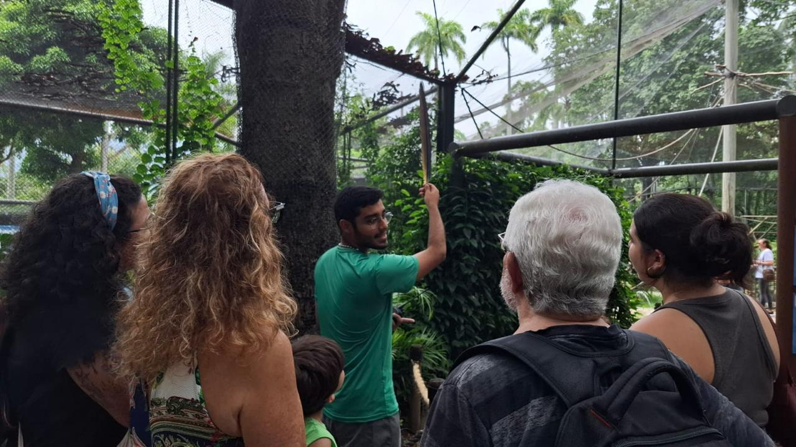
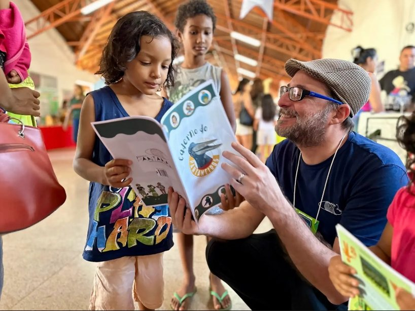
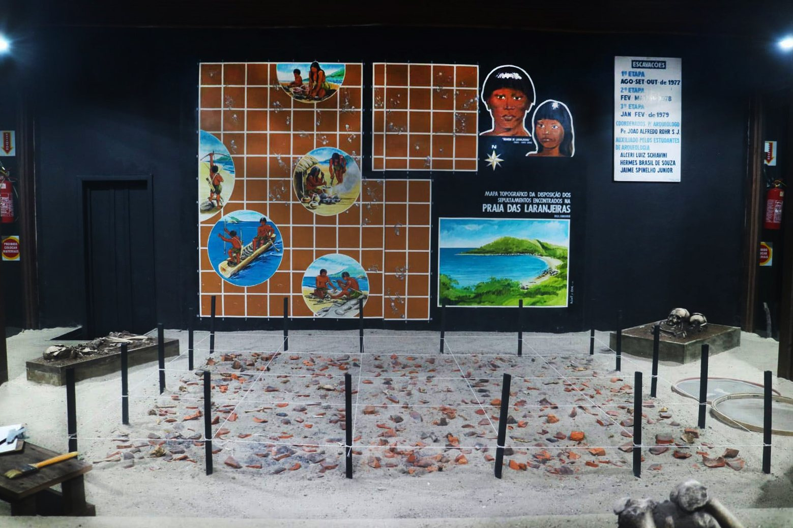
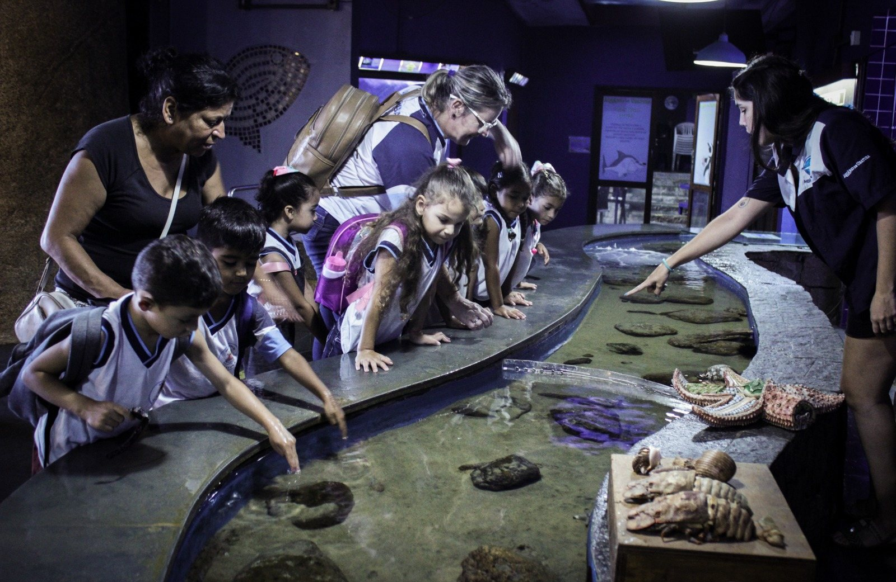
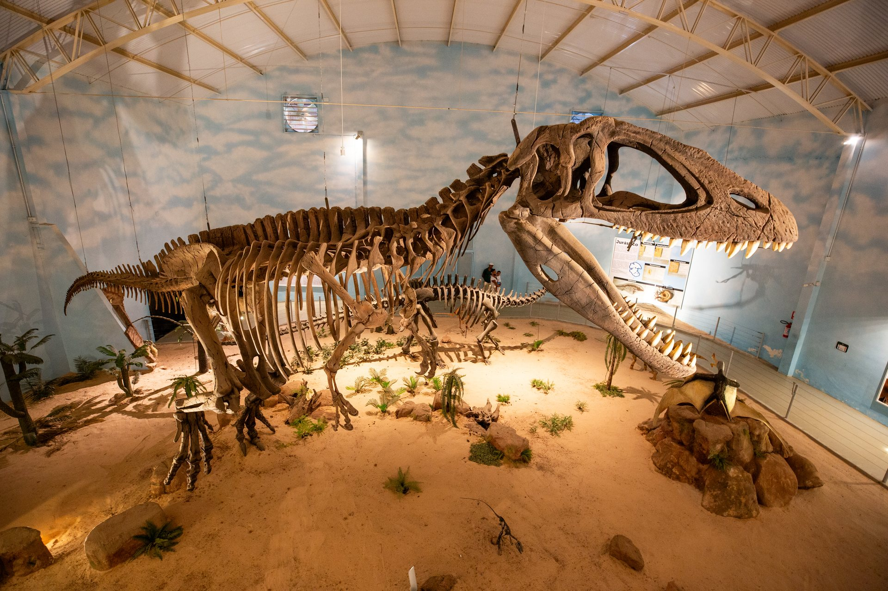

Educação
Educar é conservar: sensibilização crítica, inclusiva e transformadora
Zoológicos e aquários evoluíram muito ao longo do tempo. Deixaram de ser espaços voltados apenas à contemplação de espécies para se consolidarem como centros de pesquisa, conservação e educação ambiental. Hoje, essas instituições têm a capacidade de sensibilizar milhões de visitantes todos os anos, despertando valores que podem transformar a relação da sociedade com a natureza.
A AZAB e seus associados acreditam que a educação é a base para essa transformação. A experiência de contato com a biodiversidade nesses espaços possibilita que o público compreenda que cada espécie tem valor intrínseco e direito à existência, que todas as formas de vida estão interligadas e que cabe ao ser humano a responsabilidade de conservar os recursos naturais. Essa perspectiva faz da educação em zoológicos e aquários um instrumento de sensibilização crítica, inclusiva e transformadora.
O trabalho educativo
O trabalho educativo realizado pelas instituições associadas à AZAB é diverso e estruturado. O Comitê de Educação Ambiental coordena campanhas nacionais, organiza projetos integrados e promove a capacitação de educadores. Além disso, programas educativos unem ciência, emoção e experiência prática para gerar impacto real nos visitantes, enquanto eventos e encontros fortalecem a troca de conhecimento e as boas práticas entre profissionais da área.
A atuação dos educadores ambientais nesses espaços é essencial. Mais do que transmitir informações, eles constroem conexões emocionais que transformam a curiosidade em consciência crítica e o encantamento em ações em prol da conservação. O alcance dessa missão não se limita aos visitantes. Também é fundamental envolver governantes e tomadores de decisão, apresentando a eles a relevância da conservação para que políticas públicas e iniciativas coletivas ganhem mais força e legitimidade.
Integração entre educação e pesquisa
Outro aspecto central é a integração entre educação e pesquisa Resultados científicos obtidos nas instituições associadas da AZAB são aplicados diretamente em programas educativos, no desenvolvimento de exposições interativas, na criação de conteúdos pedagógicos e na capacitação de profissionais em manejo e conservação. Dessa forma, ciência e educação caminham juntas e potencializam o impacto das ações em defesa da biodiversidade.
Educar é conservar
Educar é conservar. Ao aproximar pessoas da fauna e da flora, zoológicos e aquários contribuem para formar uma sociedade mais consciente, engajada e responsável. É nesse papel que a AZAB reafirma o compromisso de seus associados: transformar experiências em conhecimento, e conhecimento em atitudes que garantam o futuro da vida em nosso planeta.
Experiências que transformam

Visita guiada: educação para jovens e adultos | Foto: Bioparque do Rio

Zoológicos e Aquários desenvolvem amplos trabalhos de educação ambiental com suas comunidades e nas visitas estudantis feitas em seus espaços | Foto: Bioparque Pantanal

Espaço expositivo antropológico | Foto: Zoológico Balneário Camboriú

Interação com respeito e cuidado | Foto: Aquário de Ubatuba

Viagem pela Evolução e Biodiversidade do Mundo | Foto: Zooparque Itatiba
Educação para a conservação
Conheça o Comitê de Educação Ambiental e nossas campanhas nacionais.